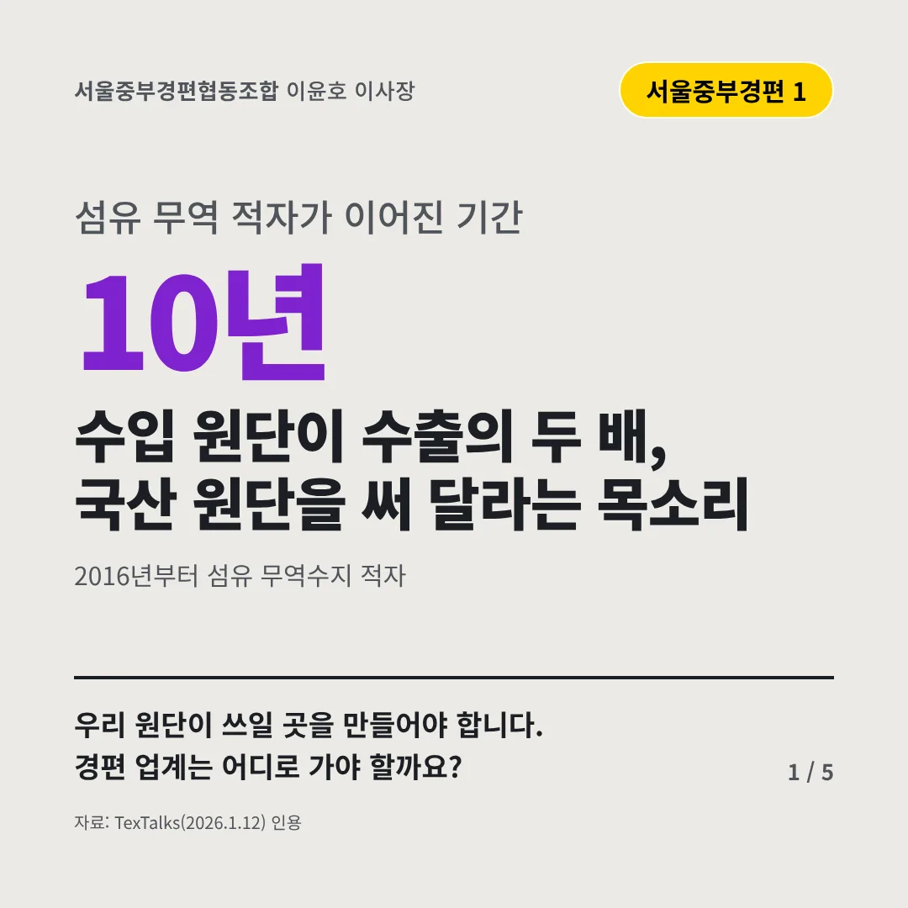
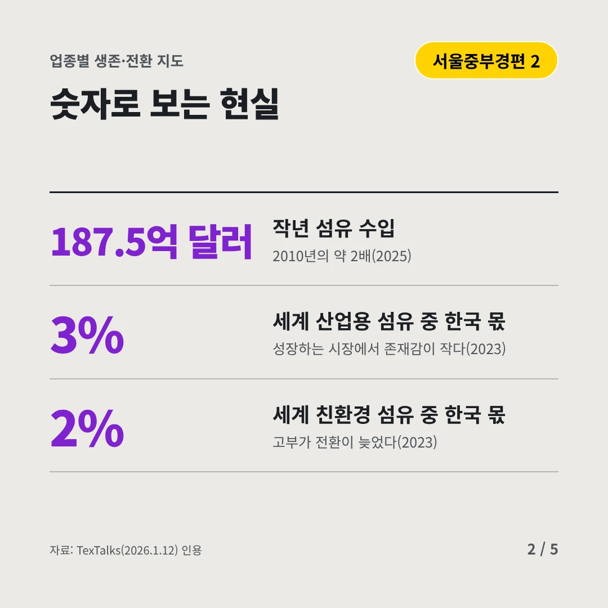
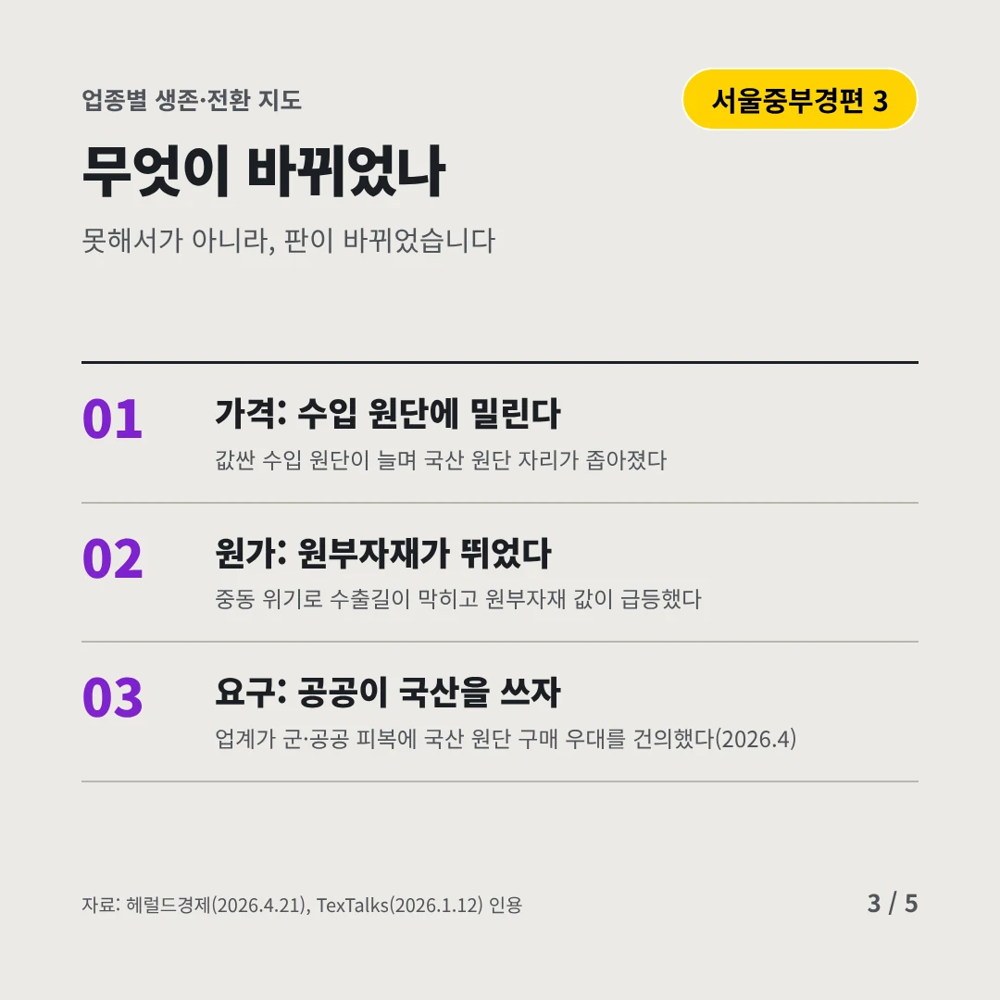
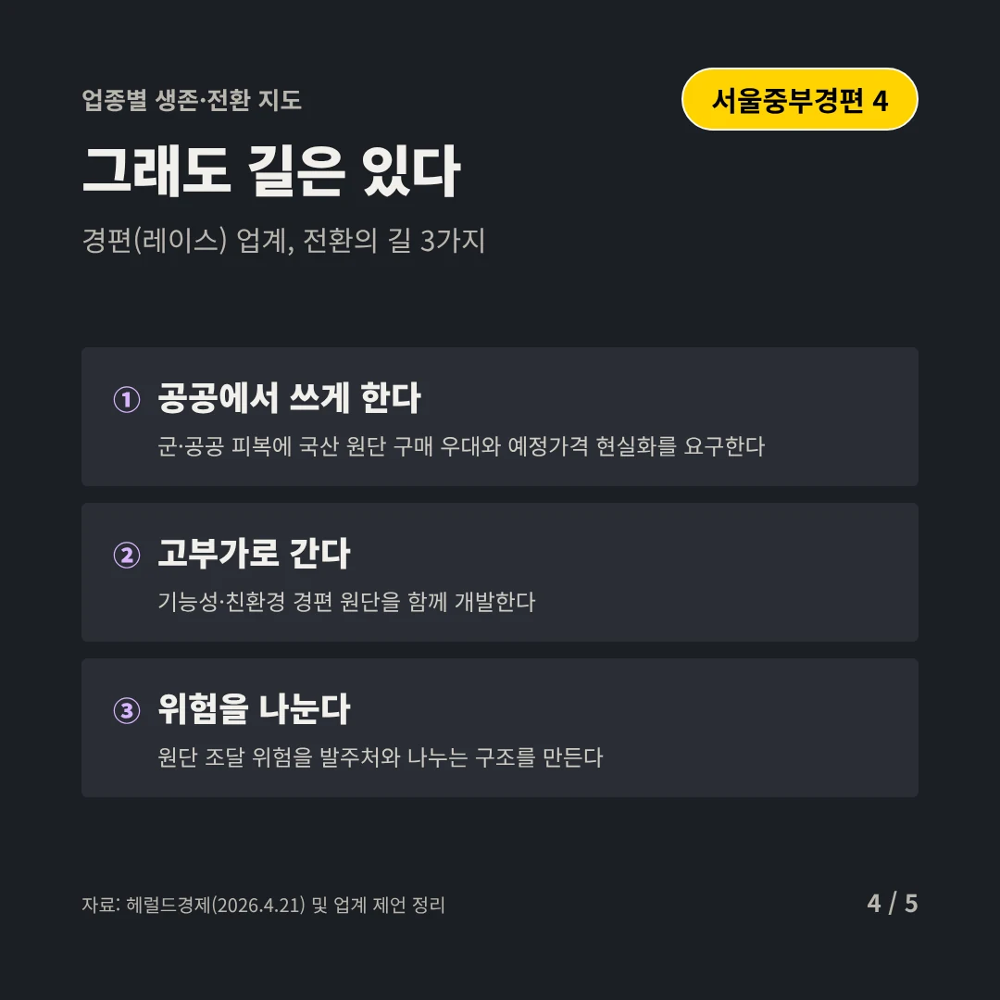
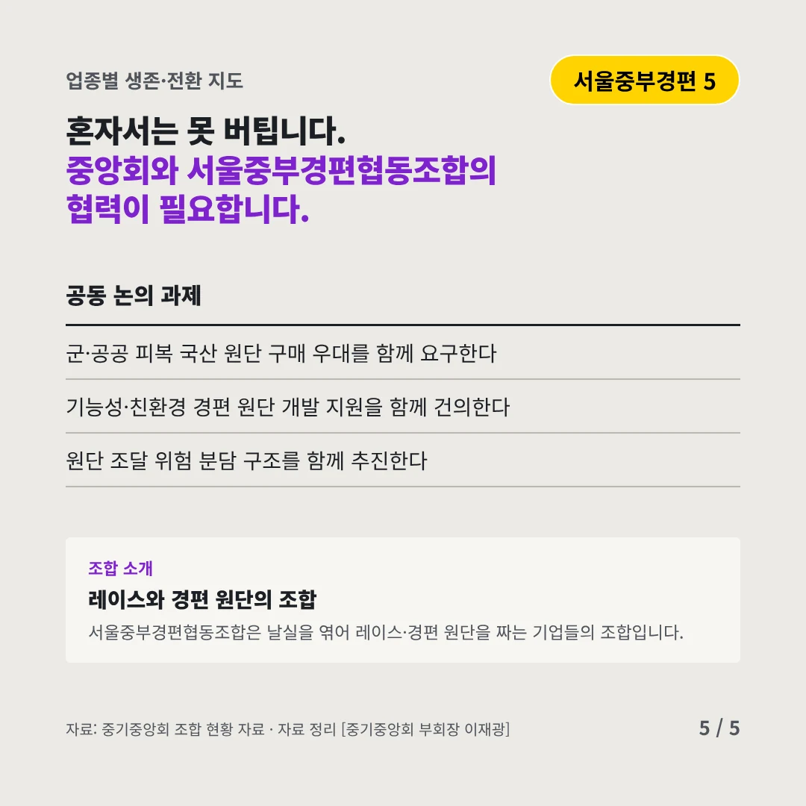
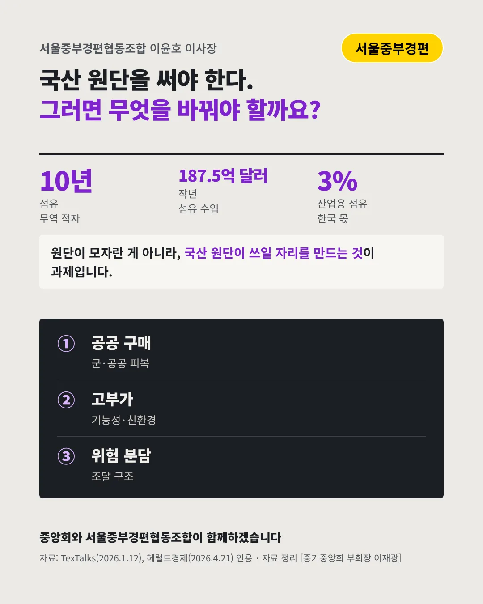

서울중부경편협동조합이윤호 이사장
수입 원단이 수출의 두 배, 국산 원단을 써 달라는 목소리
10년 섬유 무역 적자가 이어진 기간






우리 원단이 쓰일 곳을 만들어야 합니다. 경편 업계는 어디로 가야 할까요?
숫자로 보는 현실
- 187.5억 달러작년 섬유 수입2010년의 약 2배(2025)
- 3%세계 산업용 섬유 중 한국 몫성장하는 시장에서 존재감이 작다(2023)
- 2%세계 친환경 섬유 중 한국 몫고부가 전환이 늦었다(2023)
무엇이 바뀌었나
- 가격: 수입 원단에 밀린다값싼 수입 원단이 늘며 국산 원단 자리가 좁아졌다
- 원가: 원부자재가 뛰었다중동 위기로 수출길이 막히고 원부자재 값이 급등했다
- 요구: 공공이 국산을 쓰자업계가 군·공공 피복에 국산 원단 구매 우대를 건의했다(2026.4)
그래도 길은 있다
- 공공에서 쓰게 한다군·공공 피복에 국산 원단 구매 우대와 예정가격 현실화를 요구한다
- 고부가로 간다기능성·친환경 경편 원단을 함께 개발한다
- 위험을 나눈다원단 조달 위험을 발주처와 나누는 구조를 만든다
한 장 요약

조합 소개
서울중부경편협동조합은 날실을 엮어 레이스·경편 원단을 짜는 기업들의 조합입니다.
자료: TexTalks(2026.1.12), 헤럴드경제(2026.4.21)